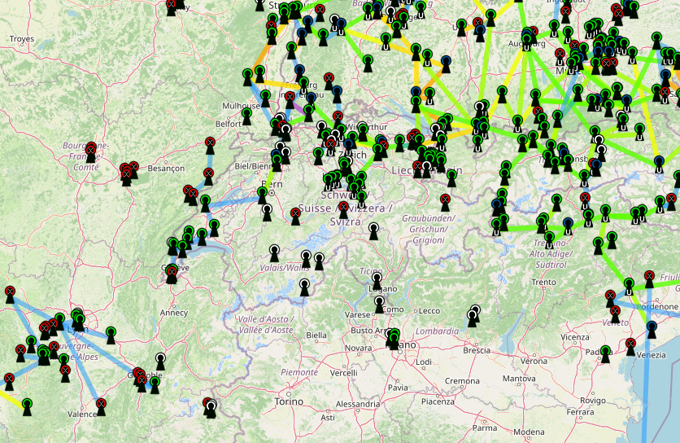

HAMNET: ein Datennetz, das Funkamateure selbst verbinden
Vom Laptop über den Funkzugang ins Amateurfunknetz: HAMNET verstehen und den Einstieg mit HB9LU vorbereiten.

HAMNET-DB / OpenStreetMap-Mitwirkende · Screenshot aus meinem Archiv.
Was ist HAMNET?
HAMNET steht für Highspeed Amateurradio Multimedia Network. Es ist ein IP-Netz für Amateurfunkzwecke. Webseiten, Sprachverbindungen oder andere Daten nutzen vertraute Netzwerkprotokolle; zwischen den Standorten übernehmen häufig gerichtete Funkstrecken den Transport. Ein Browser bleibt ein Browser – der Weg seiner Daten unterscheidet sich jedoch vom üblichen Internetanschluss.
Die Funkverbindungen zwischen Knoten bilden den Backbone, also das verbindende Grundnetz. Ein Benutzereinstieg erschliesst dieses Netz für die eigene Station. Das ist weder ein WebSDR noch eine digitale Sprachbetriebsart wie FreeDV: HAMNET transportiert Daten, auf denen verschiedene Anwendungen aufbauen können.
Ethernet / lokales Netz→Outdoor-Funkgerät
Richtantenne zum Zugang→HAMNET-Knoten
Dienste und andere Standorte
Wozu lässt es sich nutzen?
Je nach erreichbaren Diensten sind etwa Amateurfunk-Webseiten, Kameras, APRS-Daten, Sprachkonferenzen oder Verbindungen zu weiterer Funkinfrastruktur möglich. Das Angebot kommt von den beteiligten Stationen. HAMNET ist kein allgemeiner kostenloser Internetanschluss. Auch ein Zugang über einen angebotenen Internet-Tunnel ist nicht gleichbedeutend mit einer unabhängigen Funkverbindung: Fällt dessen Internetweg aus, fällt dieser Zugang ebenfalls weg.
Der lokale Ausgangspunkt: HB9LU
HB9LU dokumentiert Zugänge auf dem Lehn, dem Sonnenberg und beim Verkehrshaus Luzern ↗. Auf der Seite stehen die jeweiligen Funkparameter und Ansprechpartner. Für den Lehn sind beispielsweise 5805 MHz, 10 MHz Bandbreite, vertikale Polarisation und DHCP angegeben. Diese Kombination gehört zu diesem Zugang; sie ist kein universelles HAMNET-Profil. Vor einem Aufbau die aktuellen Angaben mit dem Betreiber abstimmen.
Die dort beschriebene Webcam ist nur aus dem HAMNET erreichbar. Das ist ein anschauliches erstes Ziel: Zunächst Zugang und IP-Verbindung herstellen, dann einen konkreten internen Dienst aufrufen.
So bereitest du deinen Einstieg vor
- Standort suchen: HAMNET-Datenbank ↗ und HB9LU-Seite ansehen. Ein Punkt auf der Karte ist noch kein Nachweis, dass dein Balkon ihn erreicht.
- Kontakt aufnehmen: Mit dem Sysop klären, welcher Benutzereinstieg geeignet ist und welche Geräte, Frequenz, Bandbreite, Polarisation und Zugangsvoraussetzungen gelten.
- Funkweg prüfen: Besonders bei 5-GHz-Verbindungen zählen freie Sicht und Freiraum um die Sichtlinie. Bäume oder eine Dachkante können die Verbindung stark beeinträchtigen. Eine Landkarte ersetzt kein Höhenprofil.
- Passende Hardware wählen: Üblich sind geeignete Outdoor-Funkgeräte mit Richtantenne, Ethernet und passender PoE-Versorgung. Ein Laptop-WLAN unterstützt nicht automatisch die nötigen Kanäle und Bandbreiten. PoE-Spannung und Gerätekompatibilität vorher prüfen.
- Zugang einrichten: Parameter des Betreibers übernehmen, Antenne vorsichtig ausrichten und Linkqualität beobachten. Bei einem DHCP-Zugang die IP-Adresse automatisch beziehen; keine fremde Netzadresse eigenmächtig vergeben.
- Schrittweise testen: Erst Verbindung zum Zugang, dann einen vom Betreiber genannten HAMNET-Dienst testen. Adresse, Signalwerte und funktionierende Konfiguration dokumentieren.
Wenn ein Link steht, aber keine Seite erscheint
Prüfe getrennt: Hat das Funkgerät eine Verbindung? Hat der Rechner eine passende Adresse? Funktionieren Routing und Namensauflösung? Ist der gewünschte Dienst überhaupt im Netz erreichbar? Ein guter Funkpegel beweist nur einen Teil dieser Kette. Zugang und Sendeberechtigung mit dem Betreiber klären; die Bezeichnung HAMNET allein ist keine Frequenzfreigabe.
Und im Notfunk?
Ein selbst betriebener Datenweg kann wertvoll sein. Belastbar wird er aber erst, wenn Stromversorgung, Zwischenstandorte, Anwendungen und Bedienung ebenfalls vorbereitet sind. Eine mehrfarbige Kartenlinie verrät weder Akkulaufzeit noch Ausfallsicherheit. Genau diese Verbindung aus Funk und Netzwerktechnik macht HAMNET zu einem guten Gemeinschaftsprojekt.
Kartenausschnitt: HAMNET-Datenbank, Screenshot aus meinem Archiv. Kartengrundlage © OpenStreetMap-Mitwirkende. Netz-Daten: HAMNET-DB, CC BY-NC-SA ↗; Originalkarte und Lizenzangabe ↗. Die Aufnahme zeigt einen Zeitpunkt, keinen Live-Status.